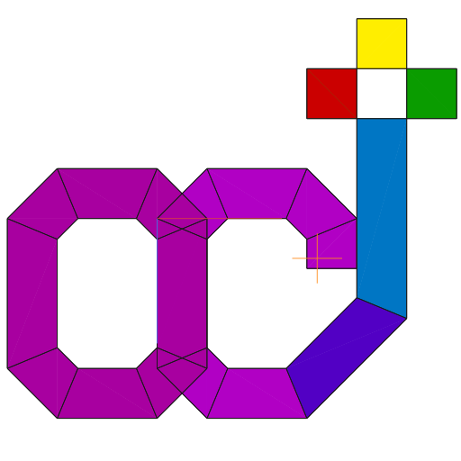

Octodraw
Web bundle build 4.4.6
This artifact publishes the Octodraw documentation as a web app bundle for release builds.
Desktop and Android binaries remain the primary runtime targets.
Generated at 2026-03-09T08:34:38.617308861Z (UTC)